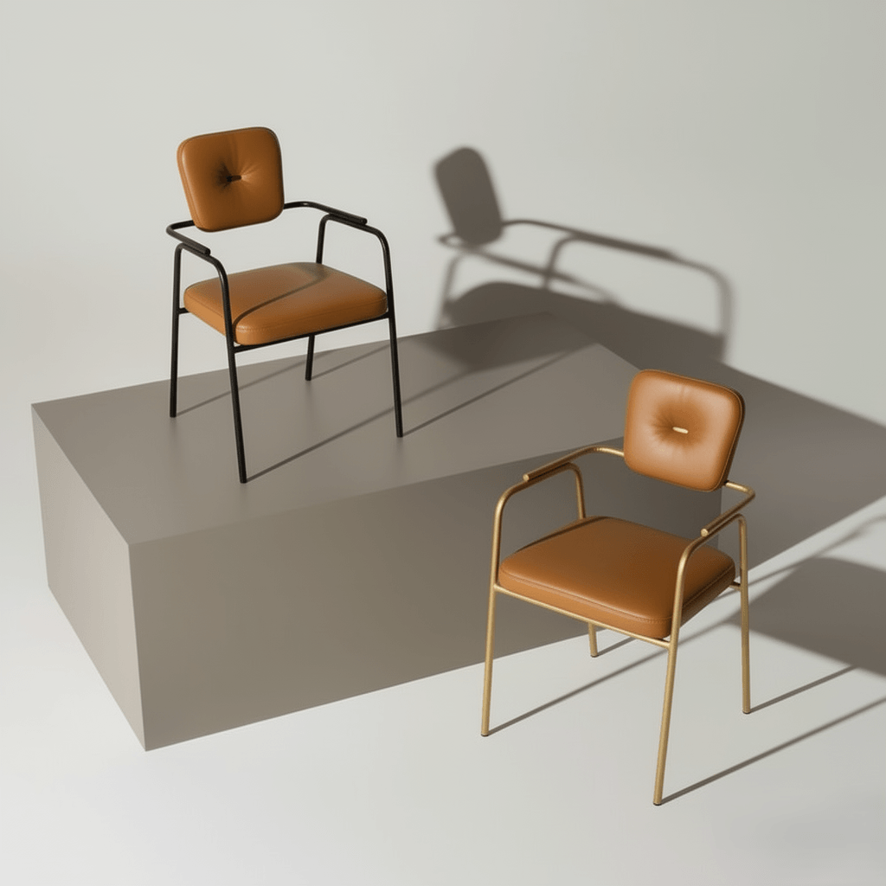

Factory in Kosovo — Since 2015
Metal that
takes shape.
Metal furniture for restaurants, cafés and commercial spaces, carefully made to your dimensions, colours and materials.

N°16 — NovaraCNC · Powder Coat
ChairsBar StoolsTablesBoothsBar CountersMetal DoorsCNC WorkMade in Kosovo
ChairsBar StoolsTablesBoothsBar CountersMetal DoorsCNC WorkMade in Kosovo
Catalogue · 01 Chairs
Chairs.
Every line, considered.
Metal frames with upholstery chosen to your request. Every chair is available for wholesale orders.
Vento
02Aria
03Aura
04Aura Lux
05Blis X
06Bologna
07Calma
08Delta
09Elite
10Etna
11Garden
12Gava
13Lido
14Zen X
15Novara
16Olmo
17Oslo
18Palma
19Plaza
20Riva
21Roma
22Titan
23Vanta
24Verde
25Avena
26Lina
27Nova Collection
28Terra
29Vento
30Nero
31Mondo
32Aero
33Orbit
34Ruve
35Torino
36Enzo
37Matera
38
Catalogue · 02 Bar Stools
Bar Stools.
Height with character.
Metal bar stools for bars, counters and cafés. Every model is available for wholesale orders.
Regina
01Retro
02Senso
03
Delta
04Toto
05Amber
06Linea
07Siena
08Velo
09Zoya
10Vera
11
Catalogue · 03 Tables
Tables.
Metal table bases.
Shapes and dimensions to suit your concept.
T°01
Table 1
01
T°02
Table 2
02
T°03
Table 3
03
T°04
Table 4
04
T°05
Table 5
05
T°06
Table 6
06
T°07
Table 7
07
T°08
Table 8
08
T°09
Table 9
09
T°10
Table 10
10
T°11
Table 11
11
T°12
Table 12
12
Catalogue · 04 Sets
Modern Sets.
Timeless style.
Booths, chair-and-table combinations and restaurant layouts. Delivered ready to assemble.
S°01
Arco
01
S°02
Atos
02 S°03
S°03
Aura Set
03 S°04
S°04
Delta Set
04
S°05
Star
05
S°06
Zara
06 S°07
S°07
Zen X Set
07
S°08
Niva
08
Catalogue · 05 Other Work
Our Projects.
No limits on form.
Bar counters, metal doors, CNC panels and any custom element. Bring us the dimensions and we'll make it.
Papirun
 P°01
P°01
 P°02
P°02
 P°03
P°03
 P°04
P°04
 P°05
P°05
 P°06
P°06
 P°07
P°07
 P°08
P°08
 P°09
P°09
 P°10
P°10
 P°11
P°11
Aurora Longue
 A°01
A°01
 A°02
A°02
 A°03
A°03
 A°04
A°04
 A°05
A°05
La Strada
 L°01
L°01
 L°02
L°02
 L°03
L°03
 L°04
L°04
Pizza Hutt
 P°01
P°01
 P°02
P°02
 P°03
P°03
 P°04
P°04
 P°05
P°05
 P°06
P°06
 P°07
P°07
Ponte Lounge
 P°01
P°01
 P°02
P°02
 P°03
P°03
 P°04
P°04
 P°05
P°05
 P°06
P°06
 P°07
P°07
 P°08
P°08
Proka
P°01
P°02
P°03
P°04
P°05
Lola Downtown
 L°01
L°01
 L°02
L°02
 L°03
L°03
 L°04
L°04
 L°05
L°05
 L°06
L°06
 L°07
L°07
 L°08
L°08
 L°09
L°09
 L°10
L°10
 L°11
L°11
Adore Longue Patisserie
 A°01
A°01
 A°02
A°02
 A°03
A°03
 A°04
A°04
 A°05
A°05
 A°06
A°06
 A°07
A°07
 A°08
A°08
 A°09
A°09
 A°10
A°10
 A°11
A°11
 A°12
A°12
 A°13
A°13
Boheme Playpark
 B°01
B°01
 B°02
B°02
 B°03
B°03
 B°04
B°04
 B°05
B°05
 B°06
B°06
 B°07
B°07
 B°08
B°08
 B°09
B°09
 B°10
B°10
Che Bar Prizren
 C°01
C°01
 C°02
C°02
 C°03
C°03
 C°04
C°04
 C°05
C°05
 C°06
C°06
 C°07
C°07
 C°08
C°08
 C°09
C°09
The Factory
One idea, CNC and steady hands.
ORTO Furniture is a manufacturing plant specialised in metalwork. We work exclusively wholesale and collaborate closely with architects, designers and business owners, producing to your dimensions, materials and details.
- 2015
- Since
- 15+
- Markets
- 2026
- Technology
- 100+
- Custom models
Contact
Bring us the project. We'll build it.
Address
Nëntori i Dytë Milloshevë
Markets
Kosovo · Albania Germany · Switzerland